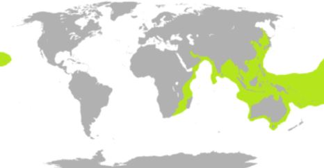

SERPIENTE MARINA
La evolución de las serpientes de mar ha tenido lugar desde sus contrapartes, las serpientes terrestres de Australia. La subfamilia incluye 62 especies distribuidas en 17 géneros.
| Tamaño | Los adultos de la mayoría de las especies que crecen entre 120 y 150 cm de longitud, con los más grandes, alcanzando un máximo de 3 m |
| Alimentación | La mayoría de especies de serpiente de mar se alimentan de peces, especialmente de anguilas. |
| Distribución geográfica |  |